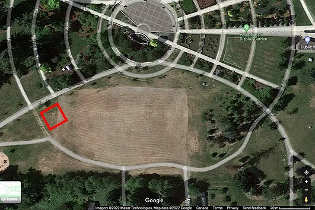
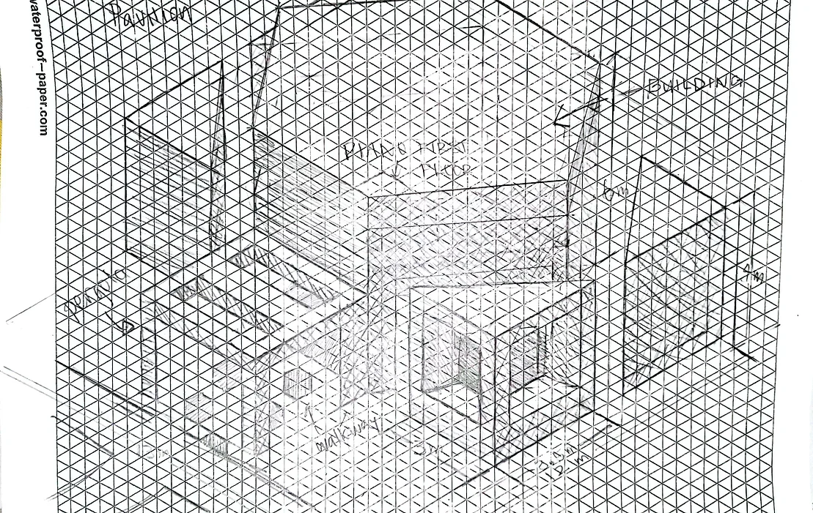
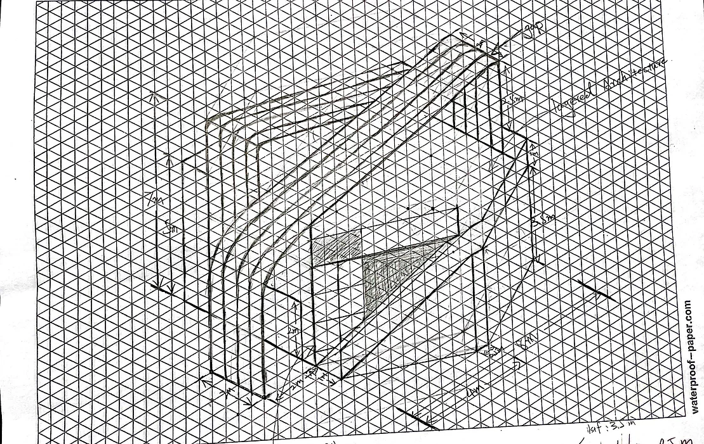
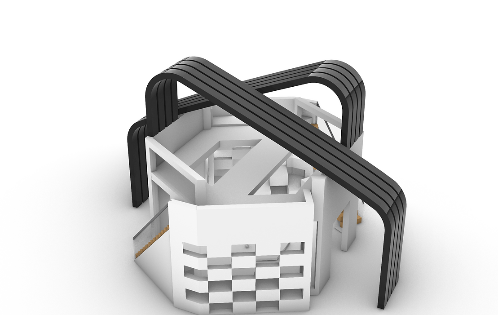
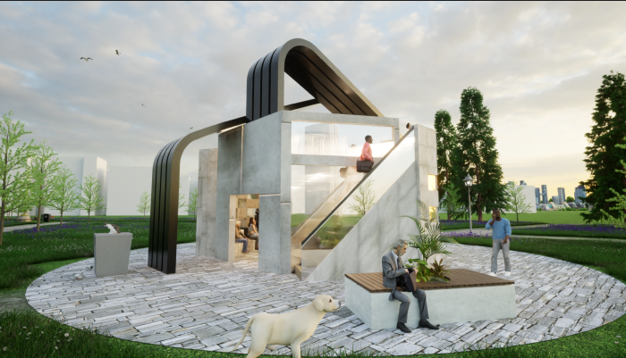
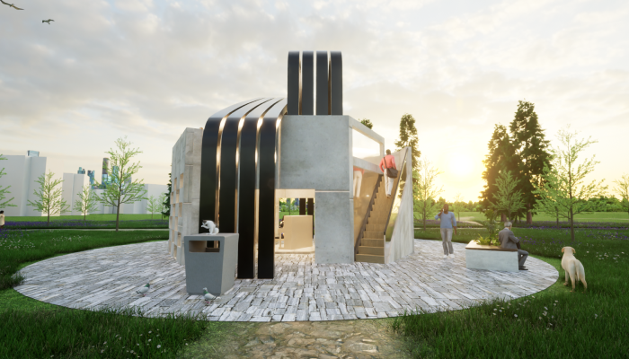
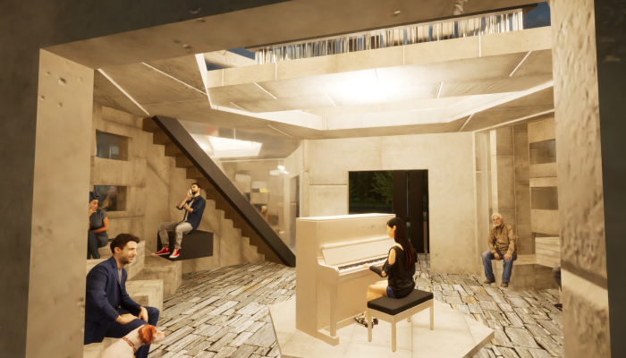
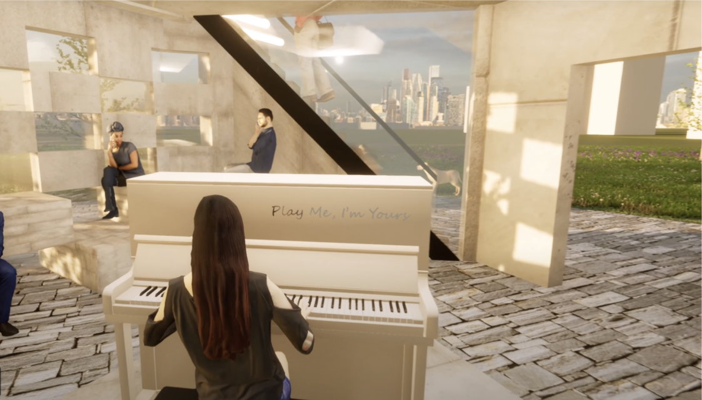

May 2022 - Aug 2022
For this school project, our team designed a music recital hall in Surrey's Holland park. Digitally 3D modelled in Rhinoceros3D, and then physically prototyped with laser-cut boards, foam, and wood.
Yilin Luo, Michael Su, Qijie Wang, Xiaotong Zhang
I was the project's lead designer that handled ideation, sketching, 3D modelling, and enviromental modelling.
Sketching, 3D Modelling, Environmental design, Filming, Video Editing.
Rhinoceros3D, Grasshopper, Twinmotion.
Design a pavilion for Surrey's Holland park, complete with 2 floors, seating for pedestrians, and a pergola. Applying architecturally syntactic rules to generate a spatial design of a pavilion to be in Holland Park.
Our team of 4 designed a music recital hall pavilion for the City of Surrey's Holland Park. we created a structure using principles and elements of design to create an aesthetic functional, and satisfying human-centered experience. I applied representations including sketching, digital, and physical modeling to communicate design intent and solutions to the client.
We chose a location between 2 walkways, with no shade from trees, and a quiet environment for our music recital pavilion. This allowed us to have a decent amount of foot traffic, with a resting area for pedestrians. Music could be played clearly away from noises such as traffic, playgrounds, and construction. For our architectural design, we chose to use a symmetrical hexagonal shape to provide a centric design for sound. I designed and completed this two dimensional design exercise using geometric shapes cut in fabric to compose possible forms for the pavilion.
I drew our first isometric sketch based on the geometric shapes. After learning about new design principles in class, we reiterated our idea and incorporated infill and panel architecture into our updated sketches.
 Based on our isometric sketches, we created a digital version of our pavilion model in Rhinoceros3D. After getting feedback from the TA and classmates, we changed the windows to an Elementary wall architecture.
I imported the model of our pavilion into the software Twinmotion, recreated the park in the software using its assets, and then added people to showcase our design on the human experience.
   After testing and feedback from our classmates and TA, we found out a problem with both our website and mobile design were too condensed, without a lot of negative space. Our redesign took that feedback and implemented a website with more negative space, asymmetrical balance, and use of icons, graphics and textures to balance out the negatives and guide viewers eyes towards the next section.
One big pain point was the crashing of software causing loss of
progress, fortunately our group had only lost about 25-30 mins of
work, while some others had lost 2 hours. I solved this by saving
frequently and turning on auto save.
Things I learned was that digital models are a lot easier to create
and redesign compared to a physical model, but it comes with a steep
learning curve of a new software. It doesn't need materials such as
glue, textures, and parts can be resized or changed. Interior design
is easier as we can walk through or hide walls to visualize a space